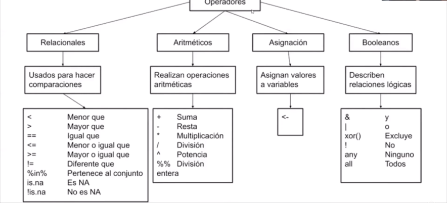

5+5[1] 1025/5[1] 52*2[1] 427-2[1] 25Metodología Cuantitativa Avanzada - Magíster en Ciencias Sociales
El objetivo de esta guía práctica es introducirnos en los procedimientos básicos del uso del lenguaje y ambiente R.
En detalle, aprenderemos:
Herramientas básicas de programación en R
Operadores en R
Tipos de datos
Revisemos algunos conocimientos básicos para la programación en R. Pero antes, tengamos dos cosas en mente:
Primero, ¿qué es codificar?, en programación codificar corresponde a un proceso de entrega de instrucciones en un lenguaje específico, siguiendo un orden lógico y coherente.
Segundo, de aquí en adelante nos manejaremos con una máxima en el curso; existe un acuerdo implícito entre tú y R: R hará todos los cálculos por ti, pero en cambio tú debes dar las instrucciones con total precisión.
Uno de los usos más sencillos y que están a la base de R, es usarlo como una calculadora.
5+5[1] 1025/5[1] 52*2[1] 427-2[1] 25Como podrás ver, el resultado de estas instrucciones aparecen como un [1] en la consola. También podemos hacer operatorias más complejas y con más cálculos.
12*(7+2)+(45-32)+8[1] 12922^2 - 2^2[1] 4801/200 * 30[1] 0.15R es un lenguaje de programación orientado a objetos. ¿Qué significa eso?, implica que podemos crear elementos dentro del ambiente de R, a los cuales les asignaremos información que quedará almacenada, información que puede ir desde números, palabras, cálculos hasta grandes bases de datos.
Todas las instrucciones en R en las que crees objetos, es decir, instrucciones de asignación, tendrán la misma estructura:
nombre_objeto <- valor
El asignador <- se utiliza para crear objetos y forma parte de uno de los operadores más usados en R.
Los elementos que podemos asignar a objetos son múltiples, como números, palabras acompañadas siempre de corchetes " " y vectores que corresponden a un conjunto o secuencia de elementos del mismo tipo definidos por la funcion de concatenar = c().
Veamos algunos ejemplos de creación de objetos.
x <- 4 # asignar
x # ejecutar[1] 4y <- "Hola mundo" # los carácteres alfabéticos siempre van acompañados de corchetes
y [1] "Hola mundo"Hagamos un pequeño reto: ¿Cuál es el valor de a y b? Si a <- 5; b <- a; a <- 4
a <- 5
b <- a
a <- 4
print(a) # imprimir en la consola[1] 4print(b)[1] 5a + 10[1] 14Ahora, sea z = a^2 ¿qué resultado obtenemos de a * b + z?
z <- a^2 # asignar
a * b + z[1] 36Concatenando. con la función c(), podemos hacer un vector.
edad <- c(18,22,36,19,35) # concatenar (variable de razon)
edad[1] 18 22 36 19 35genero <- c(3,1,1,2,3) # masculino = 1; femenino = 2; transgenero = 3 (variable nominal)
genero [1] 3 1 1 2 3gse <- c("ABC1", "C2", "E", "AbC1", "E") # tambíen se pueden usar carácteres (variable ordinal)
gse[1] "ABC1" "C2" "E" "AbC1" "E" Además de lo anterior, en R es fundamental la creación de data.frames. Un Data.frame es una estructura de datos de dos dimensiones (columnas y filas), donde las columnas pueden ser de diferente naturaleza, pero deben tener el mismo largo. A partir de ella agrupamos variables en una matriz, o sea, construimos una base de datos. Es como “pegar” las columnas (variables) una al lado de otra.
Creemos un data.frame con los vectores que ya creamos antes.
base1 <- data.frame(genero, gse, edad) # Resulta como objeto de "datos" en
# entorno.
base1 genero gse edad
1 3 ABC1 18
2 1 C2 22
3 1 E 36
4 2 AbC1 19
5 3 E 35Como puedes ver, para crear el data.frame usamos la función que lleva el mismo nombre, colocando dentro del paréntesis los vectores que creamos anteriormente: data.frame(mis_vectores).
Ahora, creemos un data.frame desce cero. En este ejemplo, crearemos los vectores dentro de la función data.frame().
# Ejemplo de como crear un data.frame desde 0:
base2 <- data.frame(Sexo=c("H","M","H","M","H","M"),
Estatura=c(1.83,1.76,1.82,1.60,1.90,1.66),
Peso=c(67,58,66,48,75,55))
head(base2) # Me permite visualizar las primeras filas Sexo Estatura Peso
1 H 1.83 67
2 M 1.76 58
3 H 1.82 66
4 M 1.60 48
5 H 1.90 75
6 M 1.66 55Antes de trabajar con datos, debemos conocer el concepto de operadores. Estos símbolos no son de uso exclusivo en R, pero no todos tienen el mismo significado que en otros softwares.
Los operadores son símbolos que permiten, en los distintos procedimientos de procesamiento, simplificar procesos. Por ejemplo, serán útilizados cuando filtremos nuestros datos para personas de ciertas categorías, cuando calculemos variables nuevas (de manera aritmética o condicional) o, simplemente, cuando queramos hacer procesos “concatenados”.

Veamos algunos ejemplos:
20 == 5 # igualdad[1] FALSE30 >= 14 # mayor o igual que[1] TRUE22 <= 2 # menor o igual que[1] FALSE25 != 10 # no es igual a[1] TRUEp = 10; y = 5; p <= y # operatoria en objetos[1] FALSEEn R, al igual que en la mayoría de lenguajes de programación, contamos con datos de diversos tipos, en razón de los cuales podemos realizar determinados procedimientos de tratamiento o análisis.
Los tipos de datos están íntimamente relacionados con el nivel de medición de las variables a las que corresponden. La teoría de los niveles de medición contempla cuatro tipos:

Para responder esta pregunta, exploremos algunos datos. En esta oportunidad trabajaremos con el Estudio Longitudinal Social de Chile, que es una encuesta desarrollada para analizar intertemporalmente la evolución del conflicto y cohesión en la sociedad chilena, basándose en modelos conceptuales descritos en la literatura nacional e internacional que abordan dichas materias. Se orienta a examinar los principales antecedentes, factores moderadores y mediadores, así como las principales consecuencias asociadas al desarrollo de distintas formas de conflicto y cohesión social en Chile. Su objetivo fundamental es constituirse en un insumo empírico para la comprensión de las creencias, actitudes y percepciones de los chilenos hacia las distintas dimensiones de la convivencia y el conflicto, y como éstas cambian a lo largo del tiempo.
En R es es posible importar y exportar datos que se encuentren en cualquier formato: ya sea .csv, .dta, .sav, .xlsx y, por supuesto, .rds y .RData. Sin embargo, para poder hacerlo, lo primero es instalar y cargar las librerías que contienen las funciones necesarias para la importación de distintos tipos de archivos.
Pero, ¿dónde están mis datos? Como hemos mencionado, nuestros datos los dejaremos en la carpeta input/data de nuestro proyecto. La base con la que trabajaremos en este práctico pueden encontrarla en la página oficial de ELSOC en este enlace.
Luego de descargar la base de datos, asegurate de dejar el archivo .sav en la carpeta input/data de tu proyecto. Nota: Los datos tendrán distinto nombre según su formato (.sav, .csv, .dta, etc.).
Una vez descargados los datos, procedemos a importar nuestra base de datos. Para ello, en nuestro script, dejamos indicado que a partir de la lectura de los datos con load(), crearemos un objeto que contiene la base de datos. Fijate en el Enviroment, ya que si lo anterior se logra, el objeto aparecerá allí.
La estructura general para importar datos es la siguiente:
read_*("ruta_hacia_archivo/nombre_archivo.*")
Sin embargo, por esta vez podemos descargar la base desde internet
load(url(("https://github.com/cursos-metodos-facso/metod1-MCS/raw/main/resource/files/ELSOC_W05_v1.0_R.RData"))Para importar los datos en R debemos tener en consideración tres cosas:
Cómo se llaman los datos (en nuestro caso ELSOC_W05_v1.0_SPSS)
El formato de nuestros datos (en nuestro caso .sav)
El lugar de donde están alojados nuestros datos
No siempre nuestros datos vendrán en un único formato. Para ello, R cuenta con otras formas de leer distintos tipos de formatos.
readxl para archivos .xlsx
haven para archivos .sav
readr para .csv
Lo más probable es que no trabajemos con todos los datos que importamos, por lo que debemos seleccionar aquellas variables con las que trabajaremos para nuestro problema de investigación (cualquiera sea).
Pero, para ello primero debemos explorar nuestros datos. En R, las funciones más comunes para explorar datos son:
View(elsoc_2021) # Ver datos
names(elsoc_2021) # Nombre de columnas
dim(elsoc_2021) # DimensionesTenemos una base de datos con 2740 casos o filas y con 311 variables o columnas.
En R se trabaja a partir de paquetes (packages). ¿Qué son? De forma resumida, los paquetes son un conjunto de funciones o herramientas que pueden ser usadas en R. Los directorios de R donde se almacenan los paquetes se denominan librerías. La lógica es instalar paquetes y luego cargar (o llamar) las librerías cada vez que es necesario usarlas.
Usualmente para cargar paquetes lo hacemos de la siguiente manera:
install.packages("paquete")
library(paquete)Pero en esta ocasión utilizaremos un paquete llamado pacman, que facilita y agiliza la lectura (instalación y carga) de los paquetes a utilizar en R. De esta forma lo instalamos 1 única vez así:
install.packages("pacman")
library(pacman)Luego instalaremos y cargaremos los paquetes de R de la siguiente manera, volviendo más eficiente el procedimiento de carga de paquetes.
En este práctico utilizaremos seis paquetes
pacman: este facilita y agiliza la lectura de los paquetes a utilizar en R
tidyverse: colección de paquetes, de la cual utilizaremos dplyr y haven
dplyr: nos permite seleccionar variables de un set de datos
haven: cargar y exportar bases de datos en formatos .sav y .dta
car: para recodificar/agrupar valores de variables
pacman::p_load(dplyr, # para manipular datos
car # para recodificar datos
)Como se puede ver, antes de la función p_load hay un ::, esto se refiere a que se “fuerza” que esa función provenga de ese paquete (en este caso del paquete pacman).
Los datos character están directamente asociados a las variables cualitativas (o categóricas). Generalmente suelen ser variables de texto abierto, como es el caso de la variable pais, que detalla el país de procedencia de la persona encuestada.
Para conocer cuál es el tipo de variable en R, utilizamos el comando class(), y para detallar dentro de la base de datos cuál es la variable de interés, utilizamos el símbolo $ posterior a la base de datos:
class(elsoc_2021$comuna) # siempre es la misma estructura = base$variable[1] "character"Sin embargo, estas variables no tienden a ser las mejores a la hora de presentar nuestros resultados. Como solución, tenemos las variables de tipo Factor.
Las variables de tipo factor son ideales para trabajar con variables de tipo nominal u ordinal. Esto es así debido a que permiten establecer un orden entre las categorías de la variable, lo cual es fundamental si trabajamos, por ejemplo, con variables nominales como el sexo de los encuestados, o si trabajamos con variables ordinales como su ideología política.
class(elsoc_2021$m0_sexo)[1] "factor"class(elsoc_2021$m38) #religion[1] "factor"Las variables de tipo numeric son variables de tipo númerica, las cuales pueden ser intervales o de razón. Así, por ejemplo, cuando trabajamos con variables de razón trabajamos con variables como el número de hijos o la edad (aunque sería extraño encuestar a alguien con 0 años).
class(elsoc_2021$m0_edad)[1] "numeric"Hoy aprendimos distintas herramientas básicas para utilizar el lenguaje y ambiente R. Como resumen:
Utilizar R como calculadora, su lógica orientada a objetos creando objetos, vectores y data.frames
Operadores en R
Tipos de datos en R como variables cualitativas (character o factor) y cuantitativas (numeric)